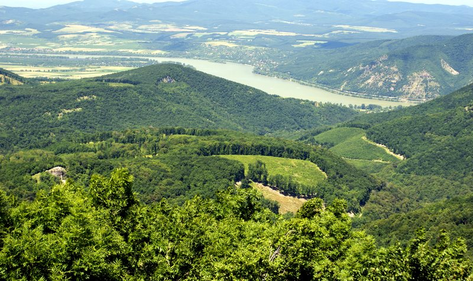
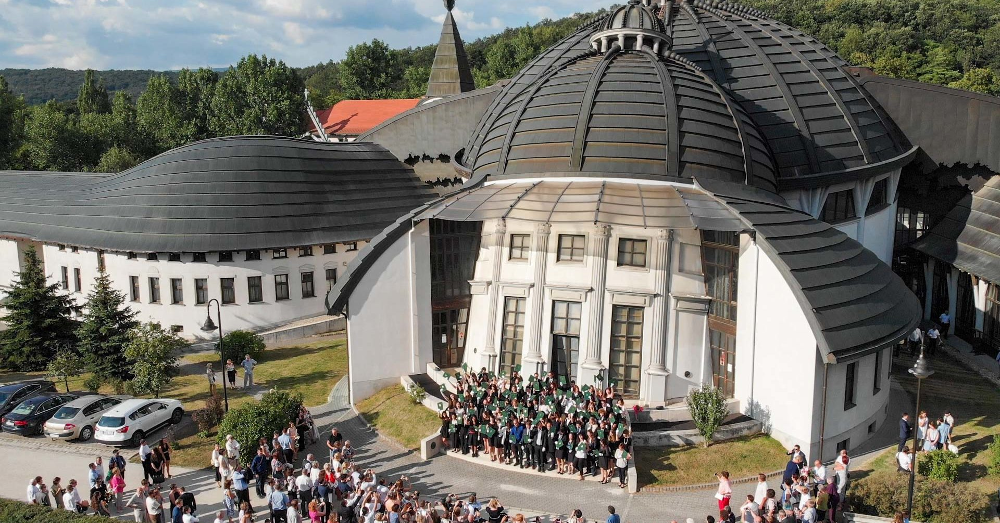
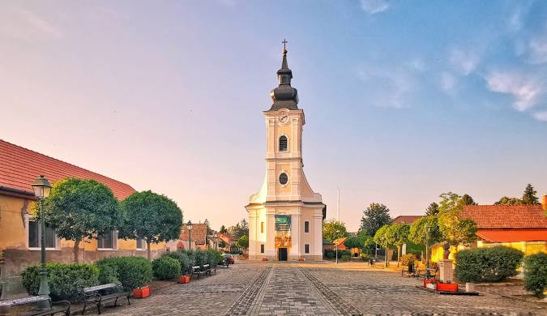

Dobogókő

Dobogókő a Pilis hegység legmagasabb csúcsa, és a természetkedvelők egyik legkedveltebb túrázóhelye. A csúcsról lélegzetelállító kilátás nyílik a környező hegyekre és a Duna-Ipoly Nemzeti Parkra. A terület különböző túraútvonalakkal rendelkezik, és ideális hely a túrázásra, kerékpározásra, valamint télen síelésre is.
Piliscsaba

Piliscsaba egy kis település a Pilis hegység déli lábánál, amely ideális kiindulópont a környék felfedezéséhez. A település és környéke különösen népszerű a túrázók és kirándulók körében. A település és a közeli Pilis-tető csodálatos túraútvonalakkal várják a látogatókat.
Szob

Szob egy kis település, amely a Pilis és a Visegrádi-hegység között fekszik. A környék gazdag történelemben és természetes szépségekben. A település környékén számos túraútvonal vezet, amelyek csodálatos kilátást nyújtanak a Dunakanyarra.